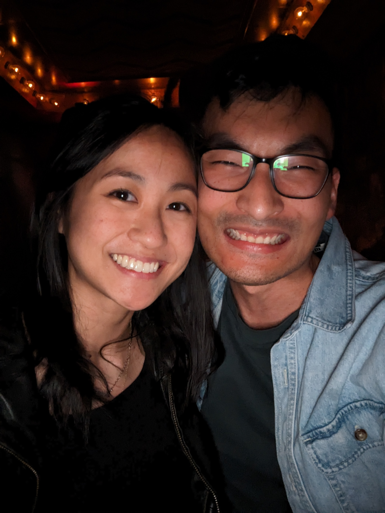

Tae-Wan Kim Profile Page!
I'm a Web Developer

Top Three Anime!!!!
One-piece

The arcs in this anime is very moving and relates
to friendships.
Demon Slayer
The animation is incredible and the artwork style is vibrant.
Naruto

It is currently one of my favorite mangas that's been adapted to anime.
On the 12th May

What to bring:
- Baloons (I love baloons)
- Cake (I'm really good at eating)
- An appetite (There will be lots of food)
This is where you need to go:
Google
map link